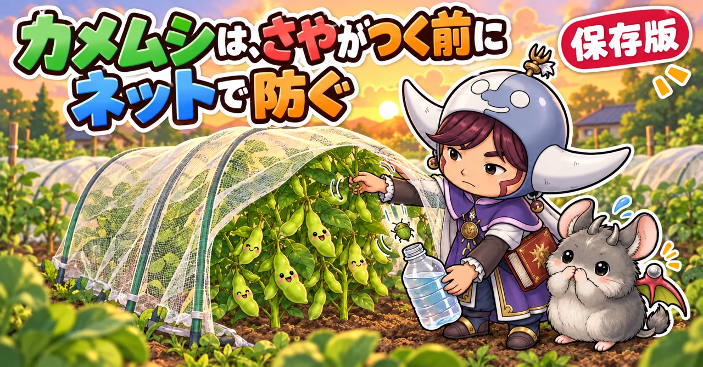
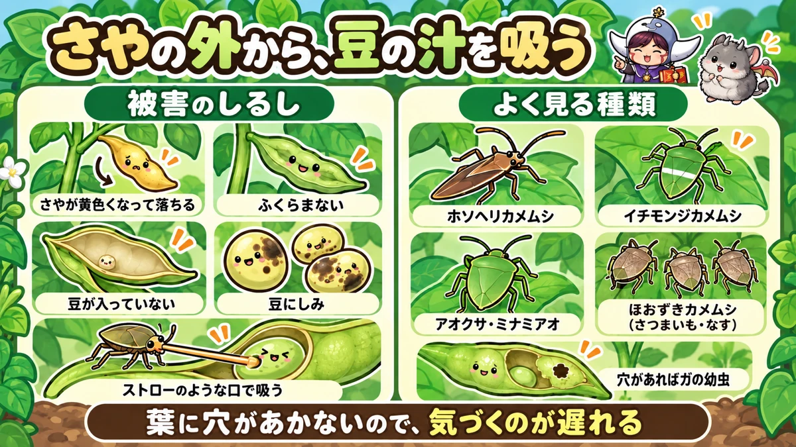
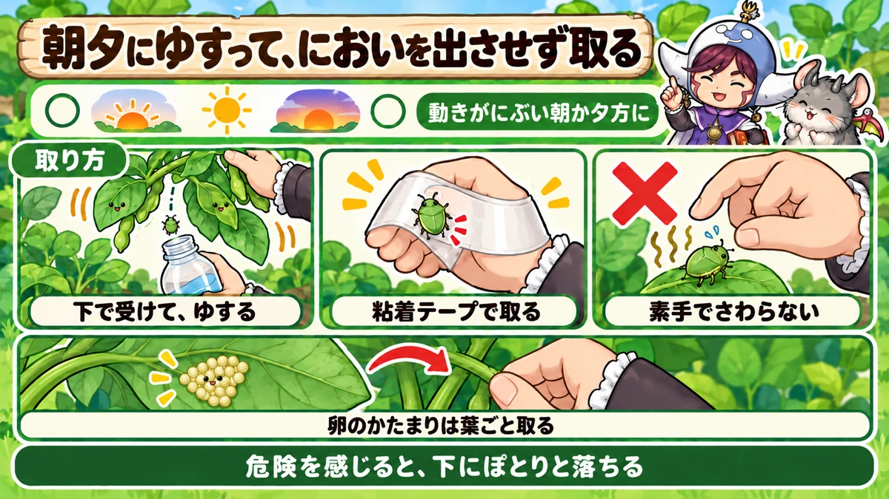
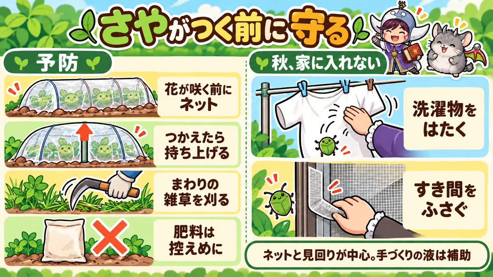

カメムシ対策の決定版｜えだまめのさやが太らない原因、見つけ方、においを出させない取り方、防虫ネット

📖 この記事の目次
この記事で分かること
- カメムシは、ストローのような口を野菜に差しこんで、汁を吸う虫です。特に、えだまめなど豆の仲間のさやや豆の汁を吸って、豆を育たなくします。
- えだまめのさやが黄色くなって落ちる、さやがふくらまない、豆が入っていない、豆に黒っぽいしみがある。これらはカメムシの被害のしるしです。
- 豆の畑に入ってくるのは夏の半ばから秋。地域によりますが、8月中旬ごろから入りはじめ、9月中旬〜10月中旬に多くなるという調査もあります。
- 見つけるなら、動きのにぶい朝か夕方。株をゆすると下へ落ちる性質を使って、下で受けて取ります。手でつかむと、強いにおいが残ります。
- 予防は、さやがつく前の防虫ネット。畑のまわりの雑草を整理し、肥料、特に窒素を効かせすぎないことも大切です。
- さつまいもやなすには、ほおずきカメムシが集まることがあります。
- 秋が深まると、カメムシは冬越しの場所を探して家の中に入ってくることがあります。洗濯物や網戸に注意します。
えだまめのさやが、なぜかふくらまない。黄色くなって、ぽろぽろ落ちていく。やっと収穫できたと思ったら、さやの中に豆がほとんど入っていない。家庭菜園でえだまめを育てたことのある方なら、一度は経験したことがあるかもしれません。
その原因の多くは、カメムシです。カメムシは、葉を穴だらけにするわけではないので、被害に気づくのが遅れがちです。そのうえ、さわると強いにおいを出すので、取るのもためらわれます。気づいたときには、さやの中の豆がほとんど育っていない、ということも少なくありません。この記事では、カメムシの種類と被害の見分け方から、多い時期、見つけ方、においを出させずに取る方法、防虫ネットでの予防、ほかの野菜での注意、秋に家へ入ってくるのを防ぐ工夫まで、順番に書いていきます。
早見：カメムシ対策の基本
被害のしるし（えだまめ）
- 若いさやが黄色くなって落ちる
- さやがふくらまない、ぺたんこのまま
- さやの中の豆が小さい、入っていない
- 豆に黒っぽいしみやくぼみがある
- 収穫の時期になっても、株が青々として枯れない
多い時期と時間
- 畑に入ってくるのは夏の半ばから。さやがつく時期と重なると被害が大きい
- 多くなるのは、夏の終わりから秋（9月中旬〜10月中旬ごろという調査も）
- 動きがにぶいのは、朝と夕方
やること
- 花が咲く前、さやがつく前に防虫ネットをかける
- 葉の裏の卵のかたまりを探して取る
- 朝か夕方に株をゆすって、落ちたカメムシを取る
- 畑のまわりの雑草を整理する
- 肥料、特に窒素を効かせすぎない

カメムシという虫
汁を吸う虫
カメムシは、細長いストローのような口を持っています。この口を、野菜の茎や葉、さや、実に差しこんで、中の汁を吸います。葉を食べて穴をあけるわけではないので、遠くから見ても被害が分かりにくいのが特徴です。
さわると、強いにおいを出す
カメムシは、身の危険を感じると、体から強いにおいの液を出します。手でつかんだり、つぶしたりすると、においが手や服につき、なかなか取れません。取るときは、直接さわらない工夫が必要です。
豆の仲間を好む
カメムシの中には、豆の仲間の実を特に好む種類がいます。えだまめや大豆、小豆、いんげんなどのさやに集まり、さやの外から口を差しこんで、中の豆の汁を吸います。こうした種類は、「実を吸うカメムシ」とまとめて呼ばれることもあります。
よく見かける種類
- ホソヘリカメムシ：細長い茶色の体。豆の仲間によく来る。飛ぶのが得意
- イチモンジカメムシ：緑色の体に、横一文字の帯がある。豆の仲間につく
- アオクサカメムシ、ミナミアオカメムシ：全身が緑色。豆の仲間のほか、いろいろな野菜につく。ミナミアオカメムシは、近年すむ地域を広げていると言われる
- クサギカメムシ：茶色っぽいまだら模様。いろいろな野菜や果樹につく。秋に家に入ってくることが多い
- ほおずきカメムシ：灰色がかった茶色の平たい体。さつまいもやなす、ピーマンなどに集団でつく
種類によって、見た目や、つく野菜が少しずつ違いますが、対策の考え方はほぼ同じです。
被害の見分け方
えだまめのさやの様子
えだまめのカメムシの被害は、さやがどの段階のときに吸われたかで、出方が変わります。
- さやが伸びはじめたころに吸われる：さやが黄色くなって、落ちてしまう。株が自然に実を減らす「生理落下」と見分けにくい
- 豆が太りはじめたころに吸われる：豆が育たず、さやがぺたんこのまま。中に豆が入っていない、または小さい
- 豆が太ったあとに吸われる：豆に黒っぽいしみや、くぼみ、ゆがみが出る
株が枯れずに青いまま
カメムシにたくさんさやを吸われると、株は実を育てる仕事が減って、収穫の時期になっても葉が青々としたまま、なかなか枯れないことがあります。これを「青立ち」と呼びます。大豆として育てて、乾いた豆を収穫する場合に、特に目立ちます。
ほかの原因との見分け方
さやがふくらまない原因は、カメムシだけではありません。
- 花が咲くころの水不足：花やさやが落ちやすくなる
- 肥料の効きすぎ：葉ばかり茂って、さやのつきが悪い
- 暑さ：花が落ちやすくなる
- カメムシ：さやは育ちはじめるのに、途中で黄色くなる、ぺたんこのまま。株のまわりにカメムシがいる
さやがついてから、途中で育たなくなる場合は、カメムシを疑います。朝夕に株をゆすって、カメムシがいないか確かめてみてください。
さやに穴があいていたら、別の虫
さやの表面に小さな穴があいていて、中の豆が食べられている場合は、カメムシではなく、ガの幼虫（さやの中にもぐりこんで豆を食べる虫）のしわざです。カメムシは汁を吸うだけなので、さやに目立つ穴はあきません。
- さやに穴がない、豆が育っていない、しみがある：カメムシ
- さやに穴があり、中の豆がかじられている、ふんがある：ガの幼虫
ガの幼虫も、さやが小さいうちに入りこむので、防虫ネットが予防になります。
トマトやなすの実の場合
トマトの実が吸われると、吸われたところが白っぽく、または黄色っぽくまだらになり、中の果肉がスポンジのようになることがあります。ピーマンやなすでも、実に小さなへこみやしみができることがあります。
春のそら豆にも
カメムシは、春のそら豆のさやの付け根にもついて、汁を吸うことがあります。吸われたさやは、育ちが悪くなったり、傷んだりします。春のそら豆でカメムシを見つけたら、その場で取っておくと、そのあと夏のえだまめに移ってくる数を減らすことにもつながります。
多い時期
夏の半ばから秋
カメムシは、春から活動していますが、えだまめの畑で被害が目立ってくるのは、夏の半ばから秋です。豆の畑の調査では、8月中旬ごろから畑に入りはじめ、9月中旬から10月中旬にかけて多くなる、という結果も出ています。
梅雨が明けて暑くなると、カメムシが一気に増えて目につくようになります。さやがつく時期と、カメムシの多い時期が重なると、被害が大きくなります。
被害を受けやすい時期
えだまめでは、花が咲いて、さやがつき、豆が太っていく時期が、カメムシの被害を受けやすい時期です。花が咲いてから、さやが伸び、豆が太るまでの1か月あまりの間が、特に守りたい期間になります。
梅雨明けに一気に増える
カメムシは、6月半ばから7月ごろに交尾の時期をむかえ、梅雨が明けると一気に数が増えて目立つようになります。梅雨に入ってしまうと、雨でネットを張る作業がしにくくなるので、えだまめのネットは、梅雨に入る前にかけ終えておくと安心です。
品種と時期の選び方
えだまめには、早くまいて早く穫れる品種と、遅くまいて秋に穫る品種があります。
- 早い品種を春にまく：カメムシが増える梅雨明けより前に、さやの時期を迎えやすい。初めてで、カメムシが心配な人に向く
- 遅い品種を夏にまく：秋に穫れて、味がよいと好まれることもあるが、さやの時期がカメムシの多い時期と重なる。ネットと見回りが欠かせない
タネの袋に書かれた「まく時期」と「収穫までの日数」から、さやがつく時期を逆算して、カメムシの多い時期と重なるかどうかを考えておきます。
まく時期をずらす
えだまめを早くまいて、カメムシが増える前に収穫を終える、という考え方もあります。早い時期にまいて7月中に収穫できる品種なら、カメムシの多い時期とさやの時期が重なりにくくなります。反対に、夏の終わりから秋にさやがつく遅い時期の栽培では、防虫ネットが欠かせません。
見つけ方
朝か夕方に見回る
カメムシは、気温の高い日中は活発に飛び回ります。朝や夕方の涼しい時間は動きがにぶく、見つけやすく、取りやすくなります。
株をゆすって、下で受ける
カメムシには、危険を感じると、足を縮めてぽとりと下に落ちる性質があります。これを使います。
1．水を少し入れたペットボトルや容器、または広げた袋を、株の下に構えます。
2．株をそっとゆすります。
3．落ちてきたカメムシを、容器や袋で受けます。
いきなり手を近づけると、飛んで逃げたり、においを出したりします。株の下に容器を構えてから、ゆするのがこつです。
葉の裏の卵を探す
カメムシは、葉の裏に、小さな粒をきれいに並べた卵のかたまりを産みます。えだまめだけでなく、近くのきゅうりなどの葉の裏に産むこともあります。葉を1枚ずつ裏返して、卵のかたまりを見つけたら、その葉ごと取ります。卵のうちに取れば、においの心配もありません。
卵はどこに産むのか
カメムシの卵については、「えだまめやきゅうりの葉の裏に産みつける」という説明と、「えだまめには直接あまり産まず、まわりの雑草や別の野菜で育ったものが飛んでくる」という説明の両方があります。種類によって卵を産む場所が違うためだと考えられます。
どちらにしても、えだまめの葉の裏と、近くのうりの仲間や雑草の両方を見ておけば、見落としが減ります。畑のまわりの雑草を整理することは、卵を産む場所を減らすことにもなります。
生まれたばかりの幼虫
卵からかえったばかりの幼虫は、卵のあったまわりに集まっています。羽がなく、飛べないので、この時期なら葉ごと取ったり、テープで取ったりしやすくなります。
えだまめの見回りの手順
1．朝か夕方に、水を少し入れたペットボトルと、粘着テープを持って畑へ行く
2．ネットのすそを片側だけ開ける
3．株の下にペットボトルの口を構えて、株を軽くゆする。落ちたカメムシを中に入れる
4．さやの付け根や、さやの集まっているところをよく見る
5．葉を何枚か裏返して、卵のかたまりがないか見る。あれば葉ごと取る
6．黄色くなったさや、ぺたんこのさやがないか見る。増えていれば、カメムシが多いしるし
7．ネットのすそを戻し、すき間がないか確かめる
さやの時期は、2〜3日に1回くらい見回ると、数が増える前に取れます。
見回りの記録をつける
カメムシを見つけた日、数、どの株にいたかを、簡単にメモしておくと、次の年に「いつごろから増えるか」が分かります。ネットをかける時期や、まく時期を決める手がかりになります。
取ったカメムシの処分
ペットボトルにたまったカメムシは、ふたをしたまま、可燃ごみなど地域の決まりに従って処分します。畑のすみに捨てると、また戻ってくることがあります。テープで取ったものは、テープごと袋に入れて口をしばります。

においを出させない取り方
水を入れたペットボトルに落とす
- 空のペットボトルに、水を3分の1ほど入れておく
- 株の下に口を構えてゆすり、落ちてきたカメムシを中に入れる
- 割りばしやピンセットでつまんで、ペットボトルに落とすのもよい
- ふたを閉めて強めに振ると、カメムシは動かなくなる
- たまったら、中身を処分する
ペットボトルの中でにおいを出しても、ふたを閉めておけば、外にはほとんどもれません。
粘着テープで取る
養生テープやガムテープを、粘着面を外にして手に巻きつけ、カメムシをぺたっと押さえて取ります。取ったら、テープごと袋に入れて口をしばります。直接さわらないので、手ににおいがつきません。地面に落ちたカメムシを取るのにも使えます。
素手でさわらない
カメムシを素手でつかむと、においがなかなか取れません。取るときは、手袋をするか、割りばしやピンセット、テープを使います。
予防
1．さやがつく前に防虫ネット
えだまめのカメムシ対策で、いちばん確実なのは防虫ネットです。
- 花が咲く前、遅くともさやがつく前にかける。まいてから4週間ほどたったら、ネットをかけておくと安心
- ネットをかける前に、葉の裏の卵や、株についているカメムシがいないか確かめる
- トンネルの支柱は、しっかり深く差しこむ
- すそは土をのせて、すき間をなくす
7月にまいて、さやの時期が夏の終わりから秋になるえだまめは、特にネットが欠かせません。
ネットが低くなったら持ち上げる
えだまめが育って、ネットの天井に頭がつかえるようになったら、トンネルの支柱を少し引き抜いて高さを上げるか、トンネルの真ん中に90cmほどの支柱を浅く立てて、ネットを持ち上げます。葉がネットに押しつけられていると、ネットの外から口を差しこまれることがあります。
さやが太る時期は水を切らさない
えだまめは、さやがついて豆が太る時期に、たくさんの水を必要とします。この時期に土が乾ききると、豆がふくらまないまま終わってしまうことがあります。株が弱ると、カメムシの被害も受けやすくなります。
- 株元の土を指で少し掘って、乾いていれば水をやる
- うね間に水を流すように、たっぷりやる
- 掘ってみて湿っていれば、水やりは要らない
2．畑のまわりの雑草を整理する
カメムシは、畑のまわりの雑草地や、休んでいる畑の雑草でも増えます。まわりに雑草が茂っていると、そこから畑に入ってきやすくなります。豆の畑のまわりの雑草は、こまめに刈っておきます。
3．肥料を効かせすぎない
えだまめは、根に住む菌の力で窒素を取りこめるので、肥料はあまり要りません。窒素の肥料を多く入れると、葉ばかり茂ってさやのつきが悪くなるうえ、カメムシなどの虫も寄りやすくなります。元肥はごく控えめにします。
4．明かりの近くに気をつける
カメムシなどの虫は、夜の明かりに引き寄せられることがあります。畑のすぐそばに、夜も明るい照明があると、そのまわりに虫が集まり、近くの畑に降りてくることがあります。そうした場所の近くで豆を育てる場合は、早めにネットをかけておきます。
天敵もいる
カメムシにも、天敵がいます。鳥やカマキリ、クモ、カメムシの卵に寄生する小さなはちなどです。畑のまわりに少し草の茂った場所があると、こうした天敵もすみつきやすくなります。ただし、畑のすぐまわりの雑草はカメムシのすみかにもなるので、豆の畑のまわりは刈っておき、天敵のすみかは畑のはしに、と場所を分けて考えます。
5．においで遠ざける方法
ハッカ油をうすめた水を葉にかけて、カメムシを遠ざける、という方法を試している人もいます。
- 500mlの水に対して、ハッカ油を数滴
- ハッカ油は水に溶けにくいので、少量のエタノールにまぜてから水を加える
- 葉から水が垂れるほどかけなくてよい。ひと吹きずつ
においで遠ざける方法は、効き目がずっと続くものではなく、雨で流れます。ネットや見回りの代わりにはならないので、補助として考えてください。ミントを小さな鉢に植えて畑のすみに置く人もいます。ミントは地植えにすると広がりすぎるので、鉢のまま置くのが安心です。

夜の明かりを使ったわな
カメムシの仲間には、夜の明かりに集まる性質があります。この性質を使って、ペットボトルに入り口の切りこみを入れ、中に小さな明かりと、虫を引き寄せる甘いにおいのものを入れて、夜に仕掛ける、というわなを試している人もいます。どれくらい集まるかは、場所や時期によって違います。畑の中に明かりを置くと、かえってまわりから呼び寄せることもあるので、試すなら畑から少し離れた場所に置きます。
野菜ごとの注意
えだまめ、大豆、小豆
カメムシの被害がいちばん大きい野菜です。花が咲く前にネットをかけ、さやがついてからは、朝夕の見回りでカメムシを探します。収穫が遅れるほど被害を受ける期間が長くなるので、えだまめは、さやがふくらんだら早めに収穫します。
えだまめの育ちに合わせた対策の流れ
1．タネをまく：防虫ネットの支柱と、ネットを用意しておく
2．芽が出て本葉が育つ：生えたばかりの芽は鳥にも食べられやすいので、ネットや不織布で守る
3．株が育ち、花が咲く前：遅くともこの時期までに防虫ネットをかける。かける前に葉の裏を確かめる
4．花が咲き、さやがつく：カメムシの被害を受けやすい時期のはじまり。朝夕の見回り
5．さやがふくらむ：水を切らさない。ネットの高さに余裕があるか確かめる
6．収穫：さやがふくらんだら、早めに穫る
花が咲く前のネットと、さやの時期の見回り。この2つをおさえれば、えだまめのカメムシ対策の大部分はできています。
摘心とネット
背の高くなる遅い時期の品種は、草丈がある程度伸びたところで先を摘む（摘心）と、わき芽が増えて、さやの数が増えます。摘心がすんだら、そのタイミングで防虫ネットをかけると、作業の流れがむだなくつながります。
穫りどきを逃さない
えだまめは、さやがふくらんで、中の豆がしっかり育ったころが穫りどきです。穫りどきを過ぎると、豆がかたくなって味が落ちるだけでなく、カメムシに吸われる期間も長くなります。株の中で、ふくらんださやが増えてきたら、早めに収穫します。
大豆、小豆として育てる場合
えだまめとして若いうちに穫らず、豆が乾くまで育てて大豆や小豆として収穫する場合は、カメムシの多い秋に、さやが長く畑にあることになります。ネットは収穫まで外さず、秋の見回りも続けます。吸われたさやが多いと、株が青いまま枯れない「青立ち」になり、収穫しにくくなります。
いんげん
いんげんのさやも、カメムシに吸われることがあります。吸われたさやは、まだらに変色したり、曲がったりします。さやを見回って、カメムシがいれば取ります。
さつまいも
夏の終わりから秋にかけて、さつまいもの葉の裏に、ほおずきカメムシが集団でつくことがあります。葉の付け根にとまって汁を吸います。茂った葉の裏を全部見るのは大変なので、葉の付け根や、つるの先を中心に見回ります。収穫のときに、においで嫌な思いをしないよう、見つけたら取っておきます。
なす、ピーマン、トマト
ナスの仲間にも、カメムシがついて、葉や実の汁を吸うことがあります。実に小さなへこみやしみができたら、まわりにカメムシがいないか見ます。ほおずきカメムシは、なすにも集団でつきます。
きゅうりなどうりの仲間
カメムシは、きゅうりの葉の裏に卵を産むこともあります。えだまめばかり見ていると、近くのきゅうりの葉の裏で卵がかえって、そこから増えていくことがあります。豆の近くで育てているうりの仲間も、葉の裏を見ておきます。
そら豆
春のそら豆にも、さやの付け根にカメムシがついて汁を吸うことがあります。吸われたさやは傷んだり、育ちが悪くなったりします。春のうちに見つけたものを取っておくと、夏のえだまめの被害を減らすことにもつながります。
ピーマン、ししとう
実の表面に小さなへこみやしみができることがあります。葉の裏に卵のかたまりがないかも見ておきます。株が茂ると見つけにくくなるので、混みあった枝は整理して見通しをよくします。
オクラ
オクラの実にも、カメムシがつくことがあります。実の表面に小さなしみやいぼのようなものができることがあります。収穫のときに、まわりにいないか見ます。
プランターやベランダで育てる場合
ベランダでも、カメムシは飛んできます。プランターのえだまめは、株の数が少ないぶん、1株の被害が目立ちます。
- プランター用の小さな支柱とネットで、花が咲く前から覆っておく
- プランターごと包む袋状のネットを使う方法もある
- ベランダは、朝夕に見回りやすい。株をゆすって、下に構えた容器で受ける
洗濯物を干す場所の近くで育てる場合は、洗濯物にカメムシがつきやすくなるので、取りこむときによくはたきます。
秋、家に入ってくるのを防ぐ
冬越しの場所を探してやってくる
秋が深まると、カメムシの中には、冬を越す場所を探して、家の壁や窓のすき間、洗濯物などに集まってくる種類がいます。畑の近くの家では、秋に家の中でカメムシを見かけることが増えます。
ミナミアオカメムシに注意
もともと暖かい地域に多かった、全身が緑色のミナミアオカメムシが、近年、すむ地域を広げていると言われています。豆の仲間をはじめ、いろいろな野菜につきます。緑色のカメムシが多く見られるようになったら、豆の畑のネットと見回りを、より念入りにします。
家に入れない工夫
- 洗濯物を取りこむときは、よくはたいて、カメムシがついていないか確かめる
- 網戸やサッシのすき間をふさぐ
- 家の中で見つけたら、つぶさず、ペットボトルや粘着テープで取る
- 畑の片づけを早めにすませ、カメムシが集まる株を残しておかない
季節ごとにやること（一般的な地域の目安）
- 4〜5月：えだまめをまく。早くまいて7月中に収穫する作型なら、カメムシの多い時期を避けやすい
- 6月：まいてから4週間ほどたったら防虫ネットをかける。かける前に葉の裏を見る
- 7月：梅雨明けからカメムシが増える。7月まきのえだまめは、さやがつく前にネットを
- 8月：豆の畑にカメムシが入りはじめる。朝夕の見回り。卵のかたまりを取る
- 9〜10月：カメムシが多い時期。秋のえだまめや大豆は特に注意。さつまいもやなすのほおずきカメムシ
- 10〜11月：家に入ってくるのに注意。畑の片づけを早めに
説明が分かれるところ
手づくりの液は効くか
ハッカ油の水や、唐辛子を焼酎に漬けた液など、手づくりの液でカメムシを遠ざける方法がいろいろ紹介されています。「唐辛子の液ではあまり遠ざけられなかったが、ハッカの香りは効いた」という声もありますが、どれも効き目がはっきり確かめられたものではありません。ネットと見回りを中心にして、手づくりの液は補助と考えてください。
ネットはいつまでかけるか
えだまめは、花が咲いても、虫に花粉を運んでもらわなくても実がつく野菜なので、ネットをかけたままでも育てられます。収穫まで、かけたままにしておくのが安心です。
早まきか、遅まきか
早くまいて、カメムシの多い時期の前に収穫を終える、という考え方がある一方、遅い時期にまく秋のえだまめは、味がよいと好まれることもあります。遅まきにする場合は、ネットと見回りを欠かさないようにします。
よくある失敗
さやがついてから、ネットをかけた
すでにカメムシが株についていたり、卵が産まれていたりすると、ネットの中で被害が続きます。さやがつく前にかけ、かける前に株を確かめます。
昼間に取ろうとして、逃げられた
日中は活発に飛び回ります。朝か夕方の、動きのにぶい時間に取ります。
素手でつかんで、においがついた
手袋、割りばし、テープ、水を入れたペットボトルを使います。
えだまめに肥料をたくさん入れた
葉ばかり茂り、さやのつきが悪くなるうえ、虫も寄りやすくなります。元肥は控えめにします。
収穫を遅らせた
さやを長く畑に置くほど、吸われる期間が長くなります。ふくらんだら早めに収穫します。
よくある質問
カメムシがいたさやの豆は食べられますか
吸われた豆は、育っていなかったり、しみがあったりしますが、食べても問題はありません。しみの部分が気になる場合は、取り除いてください。
テントウムシのような虫がいます。カメムシですか
カメムシは、体が平たく、背中の形が盾のような五角形に見えるものが多く、においを出します。テントウムシは、体が丸くて半球のような形をしています。形を見て見分けてください。
さやが黄色く落ちますが、カメムシが見当たりません
さやがつきはじめのころは、株が自分で実の数を調整して、若いさやを落とすことがあります（生理落下）。水不足や暑さでも、さやが落ちやすくなります。朝夕に株をゆすってカメムシがいないか確かめ、いなければ、水やりや暑さ対策を見直します。カメムシは飛んで出入りするので、昼に見当たらなくても、朝夕に来ていることがあります。
カメムシがついていた野菜は、食べても大丈夫ですか
カメムシそのものを取り除き、よく洗えば、食べて問題ありません。においが残っている場合は、においのついた部分を取り除いてください。
カメムシのにおいが手についてしまいました
石けんでよく洗っても、においがしばらく残ることがあります。次からは、手袋や割りばし、テープを使って、直接さわらないようにします。服についた場合は、早めに洗濯します。
農薬を使わずに、全部いなくすることはできますか
カメムシは飛んで畑の外からやってくるので、全部いなくすることはできません。目標は、さやの時期にカメムシを近づけないこと、来たものを早めに取ることです。防虫ネットをさやがつく前にかければ、えだまめの被害は大きく減らせます。
ネットの中にカメムシがいます
ネットをかける前から株についていた、すそのすき間から入った、といった原因が考えられます。朝夕に、ネットのすそを開けて株をゆすり、中のカメムシを取ります。すそのすき間もふさぎ直します。
えだまめのネットは、どの目合いがよいですか
カメムシは体が大きめなので、一般的な1mm前後の目合いの防虫ネットで防げます。ただし、生まれたばかりの小さな幼虫や、ほかの小さな虫は、すき間から入ることがあります。目合いよりも、すそのすき間をなくすこと、かける前に株を確かめることが大切です。
ネットをかけると、受粉の邪魔になりませんか
えだまめは、自分の花の中で受粉する野菜なので、虫に花粉を運んでもらう必要はありません。ネットをかけたままでも、さやはつきます。収穫まで、かけたままで大丈夫です。
毎年カメムシが多い畑です
まわりに雑草地や、カメムシが集まる木が多い場所なのかもしれません。えだまめは早まきにする、ネットをさやがつく前に必ずかける、まわりの雑草を刈る、を組み合わせてください。
学ぶ：カメムシのしくみ🔬
なぜ、さやの外から豆を吸えるのか
カメムシの口は、細い針を何本も束ねたような、長いストローの形をしています。この口を、さやの外から差しこんで、中の豆まで届かせ、汁を吸います。吸うときに、豆の中身を溶かす液を送りこむこともあり、吸われた豆は、育たなかったり、しみができたりします。さやの外から見ても、吸われた跡はほとんど分からないので、気づいたときには中の豆が育っていない、ということになるのです。
なぜ、においを出すのか
カメムシのにおいは、鳥などの天敵から身を守るためのものだと考えられています。強いにおいの液を出すことで、「食べるとまずい」と思わせて、天敵を遠ざけます。仲間に危険を知らせる合図の役割もある、と言われています。
なぜ、秋に家へ入ってくるのか
カメムシの多くは、成虫の姿で冬を越します。寒さをしのぐには、風が当たらず、温度が下がりにくい場所が必要です。秋が深まって気温が下がってくると、落ち葉の下や木の皮のすき間に加えて、日当たりのよい家の壁や、窓のすき間、干してある洗濯物の中など、暖かいすき間を探して集まってきます。家の中に入ってくるのは、冬越しの場所を探している途中なのです。
なぜ、肥料が多いと寄ってくるのか
窒素の肥料が多いと、植物の体の中に、体を作る養分（たんぱく質のもとになるもの）が多くなります。汁を吸う虫にとっては、栄養の多い、ごちそうの汁になります。また、葉が茂りすぎて株の中が暗く、風通しが悪くなると、虫が身を隠しやすくなります。えだまめに肥料を控えるのは、さやのつきをよくするためだけでなく、虫を寄せにくくするためでもあるのです。
なぜ、下に落ちるのか
カメムシは、危険を感じると、足を縮めて、ぽとりと下に落ちます。葉の上で天敵に見つかったとき、飛んで逃げるより先に、下の草むらに落ちて身を隠すほうが、すばやく逃げられるからだと考えられます。この性質を逆に使うのが、株をゆすって下で受ける取り方です。
まとめ
ここまで読んでくださって、ありがとうございます！
カメムシ対策のポイントを、もう一度まとめておきます。
- カメムシは、さやの外から口を差しこんで豆の汁を吸う。えだまめなど豆の仲間の被害が大きい
- 被害のしるしは、さやが黄色くなって落ちる、ぺたんこのまま、豆が入っていない、豆にしみ
- 畑に入るのは夏の半ばから。9月中旬〜10月中旬ごろに多いという調査も
- 朝か夕方に、株の下に容器を構えてゆすり、落ちたものを取る
- 水を入れたペットボトルや粘着テープで、においを出させずに取る。素手でさわらない
- 葉の裏の卵のかたまりは、葉ごと取る
- 予防は、さやがつく前の防虫ネット。まわりの雑草を刈り、肥料を効かせすぎない
- さつまいもやなすには、ほおずきカメムシが集団でつく
- 秋は家に入ってくる。洗濯物をはたき、すき間をふさぐ
- えだまめは、さやが太る時期に水を切らさない。株が弱ると被害を受けやすい
- 梅雨に入る前にネットをかけ終える。ネットが低くなったら持ち上げる
- さやに穴があれば、カメムシではなくガの幼虫
カメムシは、気づいたときには豆が育っていない、においで取るのもためらわれる、という困った虫ですが、時期と性質が分かれば、守り方ははっきりしています。さやがつく前のネット、さやの時期の朝夕の見回り、そして水と肥料の加減。この3つを続ければ、ぷっくりふくらんださやを、たくさん収穫できるはずです。次にえだまめをまくときは、花が咲く前にネットをかけるところまでを、最初の予定に入れてみてください
防虫ネット
えだまめは花が咲く前、さやがつく前にかけます。自分の花で受粉するので、収穫までかけたままで大丈夫です。


トンネル用アーチ支柱
ネットのトンネルに。えだまめが育ってネットがつかえたら、少し引き抜いて高さを上げます。

えだまめのタネ
早くまいて早く穫れる品種を選ぶと、カメムシが増える前にさやの時期を迎えやすくなります。
![[商品価格に関しましては、リンクが作成された時点と現時点で情報が変更されている場合がございます。]](https://hbb.afl.rakuten.co.jp/hgb/552615f0.9cc2855e.552615f1.776f7de9/?me_id=1251188&item_id=10000185&pc=https%3A%2F%2Fthumbnail.image.rakuten.co.jp%2F%400_mall%2Fyonezawa%2Fcabinet%2Ftane01%2F1011mame%2Fbeerfriendgf.jpg%3F_ex%3D240x240&s=240x240&t=picttext "[商品価格に関しましては、リンクが作成された時点と現時点で情報が変更されている場合がございます。]")
次に読む
記事一覧へ